Anglais · Première technologique · lycée général et technologique · LVA and LVB · B1-B2
Who Speaks for the Desert?
A Prophet Made of Sand: Power, Belief and a Scarce Resource in Frank Herbert's Dune (1965).
Problématique. When a desert, a resource and a prophecy make a hero, is the hero the voice of a people or the instrument of those who wrote his legend, and who pays the price?
Frank Herbert, Dune (1965), the first novel only. A sequence in British English, designed by Madame Carole Paoli Pompougnac.
Programme de langues vivantes, lycée général et technologique, classes de Première, BO n° 22 du 29 mai 2025 (in force from the 2026-2027 school year). Main axis: Art et pouvoir. Secondary axes: L'être humain et la nature, and Innovations scientifiques et responsabilité. The five activités langagières, and médiation, are named in every lesson.
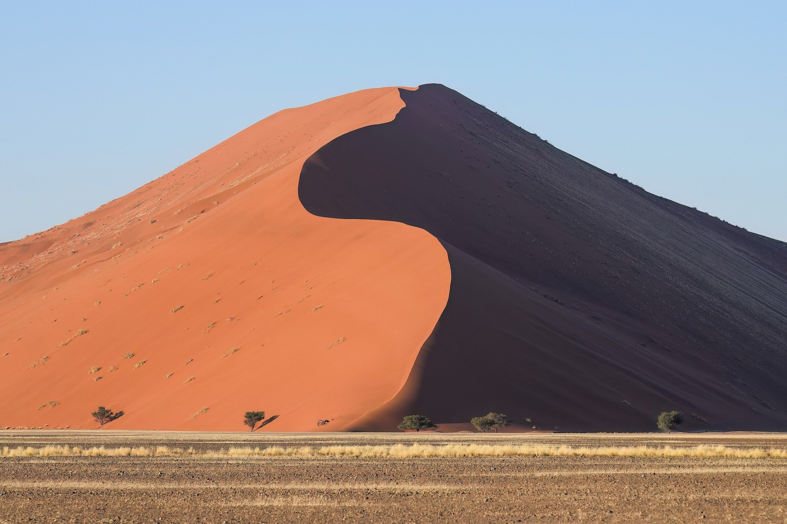
Why this sequence?
Students read Frank Herbert's first novel, published in 1965, and no later volume of the cycle. The path through the book is tight: a desert, a people, a resource that rules an empire, a prophecy that makes a hero, and the cost of that voice. The sequence holds together ecology and the desert, power and empire, religion and messianism, colonialism, the spice, and the hero myth, without turning them into a list of topics. The level is honestly B1 to B2: ambitious, never infantilising. Access is adapted; ambition is not.
Denis Villeneuve's films (Dune, 2021, and Dune: Part Two, 2024) and earlier adaptations may serve as optional homework, never as the core corpus, and never by reproducing protected stills or posters.
A dystopia strand, and two later companions. This sequence belongs to the same strand of warning fictions as the English sequence on George Orwell, Big Brother Is Watching · When Fiction Warns Reality, designed for Terminale (axe Fictions et réalités of the Terminale programme). The bridges with Orwell remain secondary: this is a study of Dune, not a comparative commentary on Nineteen Eighty-Four. A French study of René Barjavel's Ravage (1943), for the same Première technologique students, in Lettres, and a later comparative sequence, will follow. The three works are not mixed into one course.
Fiche d'identité
| Title | Who Speaks for the Desert? |
|---|---|
| Work | Frank Herbert, Dune, 1965 (first novel only; never a later volume of the cycle) |
| Author | Frank Herbert (1920-1986) |
| Level | Première technologique, lycée général et technologique, English LVA and LVB, B1-B2 of the CECRL |
| Official frame | Programme de langues vivantes, BO n° 22 du 29 mai 2025, classes de Première |
| Main axis | Axe 3, Art et pouvoir |
| Secondary axes | Axe 5, L'être humain et la nature; axe 4, Innovations scientifiques et responsabilité. A light, optional link to axe 6 (Gros plan sur une région ou spécificité de l'aire culturelle) through the Oregon Dunes that inspired Herbert, used only as biography and context, not as a substitute for Arrakis. |
| Problématique | When a desert, a resource and a prophecy make a hero, is the hero the voice of a people or the instrument of those who wrote his legend, and who pays the price? |
| Lessons | Eight lessons of 55 minutes, timed on 52 minutes, each with a stopping point and an 8-minute emergency exit. A written trace, a speaking turn for every student, and homework, in every lesson. |
| Method | La spirale de Gorse (the name honours the grandmother of Madame Carole Paoli Pompougnac's husband), in five steps, always in this order: Je remarque, Je repère, Je comprends, J'anticipe, Je trouve le sens. The navy diagram is below, and in the downloads. |
| Fiche de lecture | A book-study worksheet (fiche de lecture) will be associated with this sequence. The latest version is being identified and will be offered in pdf, docx and odt. |
Programme, activités langagières and evaluation
Since the start of the 2026-2027 school year, Première follows the programme published in the Bulletin officiel n° 22 du 29 mai 2025. Éduscol confirms that this text applies to all levels of the lycée général et technologique from that rentrée. The 2019 cycle-terminal programme, with its eight axes (including Fictions et réalités and Territoire et mémoire in Première), no longer governs this class. Fictions et réalités remains, however, an axis of the Terminale programme, which is why the Orwell sequence, written for Terminale, keeps that label. This Première sequence prepares students for that later work; it does not recall a course they have already taken.
In the voie technologique, at least three axes are to be treated during the year. This sequence treats three in full, and names them from the official list for Première:
- Axe 3. Art et pouvoir (main axis). A work of fiction that questions how power is staged, how a legend is written, and who is made to speak for a people.
- Axe 5. L'être humain et la nature. The desert remakes its inhabitants; water is scarce; ecology is a political choice, not a backdrop.
- Axe 4. Innovations scientifiques et responsabilité. A vital resource, the technology that depends on it, and the cost of that dependence.
The full official wording of each axis, from the programme annexe, will be quoted once it has been checked in the published text, and not from a shortened summary.
The five activités langagières, and médiation
The programme trains students in the five activités langagières of the CECRL, which are also the five parts of the baccalauréat contrôle continu in English, LVA and LVB, and in médiation. Every lesson of this sequence will name the activities it practises. They are:
- compréhension de l'oral;
- compréhension de l'écrit;
- expression orale en continu;
- expression orale en interaction;
- expression écrite;
and médiation, which the programme takes from the CECRL Companion Volume (reformulating, explaining, making a text or a position accessible to someone else). Médiation is taught and practised. It is shown alongside the five activités langagières in every lesson.
Assessments follow the baccalauréat contrôle continu. The diagnostic (Lesson 1, not graded), the mid-sequence assessment (Lesson 5, out of 20) and the summative assessment (Lesson 8, out of 20) have teacher grids at B1 and at B2, and a self-correction grid. Keys sit in folds on the lesson pages, and on the correction sheet in the downloads.
The lessons
Eight lessons of 55 minutes, timed on 52, each with a stopping point, an 8-minute emergency exit, a written trace, a speaking turn for every student, and homework. The five activités langagières, and médiation, are named in every lesson.
| Lesson | Title | Step of the spiral | Question of the day |
|---|---|---|---|
| Lesson 1 | A Planet Called Dune | Je remarque | What do we notice about a world where water is the measure of everything? |
| Lesson 2 | The Spice: One Resource, One System | Je repère | Who needs the spice, who extracts it, who controls it? |
| Lesson 3 | Whose Planet? Empire and the Desert People | Je repère, then Je comprends | Who owns Arrakis: the Emperor who gives it, the family who rules it, or the people who live on it? |
| Lesson 4 | Making a Messiah | Je comprends | How is a legend written, and who writes it? |
| Lesson 5 | Mid-Sequence Assessment | J'anticipe | If the Fremen follow the hero, what will they gain and what could they lose? |
| Lesson 6 | The Ecologist's Warning | J'anticipe | What does the scientist foresee, and what does he fail to foresee? |
| Lesson 7 | The Hero Trap | Je trouve le sens | Is the hero the voice of the people or the voice that replaces them? |
| Lesson 8 | The Council of the Deep Desert | the tip | The class answers the problématique. |
The final task, in Lesson 8, is The Council of the Deep Desert: a reasoned briefing (3 to 4 minutes) and a written statement (180 to 250 words; B1, 150 to 180).
La spirale de Gorse
La spirale de Gorse is the method of Madame Carole Paoli Pompougnac; its name honours her husband's grandmother. It is a real round spiral, airy, drawn in navy. It starts on the outside and turns inwards, ending in a tip, never a centre. On the outer side of each turn, students write the idea. On the inner side, they write the chapter references that support it. Students follow the line, turn by turn; nobody jumps to the tip.

| Step | What students do | Lesson |
|---|---|---|
| Je remarque | First impression, what is visible. What happens to a people when one resource rules the world? | Lesson 1 |
| Je repère | Locate words, voices, places. Who speaks in the italic text, and who speaks in the story? | Lessons 2 and 3 |
| Je comprends | Explain how it works. How does a prophecy planted by outsiders give power to the person who fits it? | Lessons 3 and 4 |
| J'anticipe | Predict consequences. If the Fremen follow a hero, what could they lose? | Lessons 5 and 6 |
| Je trouve le sens | Reach the problem. Can a people ever decide for itself if its liberator was written in advance? | Lessons 7 and 8 |
The question at the tip is not given in advance. It must emerge from the class. Expected kind of tip: "A people can be saved by the story that enslaves it."
A filled example: the death of Liet-Kynes (Book II)
| Turn | Outer side: the idea | Inner side: the reference |
|---|---|---|
| Je remarque | A man is dying of thirst; the scene feels like a lesson, not an action scene. | Book II, the chapter in which the Harkonnens leave Kynes in the desert without a stillsuit. |
| Je repère | Two voices: the dying son and the remembered father. The father's sentence is in direct speech. | "No more terrible disaster could befall your people than for them to fall into the hands of a Hero." |
| Je comprends | The scientist understands too late that a saviour can destroy the project he served. | The same chapter. Compare Book I, the Missionaria Protectiva. |
| J'anticipe | Kynes asked the Fremen to protect Paul. The warning predicts the danger of Paul's success. | Book III, final chapter (check the wording of Q8 in your edition). |
| Je trouve le sens | The hero is the disaster. Freedom given by a saviour is a new dependence. | Appendix I, The Ecology of Dune: "the highest function of ecology is the understanding of consequences." |
Assessments
- Diagnostic, Lesson 1, not graded: a positioning at A2, B1 or B2 for each skill.
- Mid-sequence, Lesson 5, out of 20 (CO 5, CE 5, EE 5, EO 5). The oral talks continue in Lessons 6 and 7.
- Summative, Lesson 8, out of 20 (briefing EOC 6, interaction EOI 4, written statement EE 6, language 4). A B2 model and a guided B1 model (seven boxes) accompany the task.
Each assessment has a teacher grid at B1 and at B2, a self-correction grid (What I did / What I missed / My improved version), and a key in a fold.
Expanding your vocabulary
The desert and nature: arid, barren, scarce, scarcity, a dune, sand, to recycle, an ecosystem, ecology, an ecologist, to transform, terraforming, irreversible.
Resource and power: a resource, to extract, a supply, to depend on, dependence, a monopoly, profit, a fief, a governor, to rule, to own, ownership.
Empire and colonialism: an empire, an emperor, to colonise, a coloniser, the colonised, a native people, to exploit.
Religion and myth: a prophecy, a prophet, a messiah, a saviour, a sign, to fulfil, faith, a believer, a ritual, a litany, a legend, a myth, to worship.
The hero: a hero, heroism, a leader, a follower, charisma, to obey, a trap, a threat, to blackmail.
Analysis: the narrator, the point of view, an epigraph, to foreshadow, an antithesis, an oxymoron, world-building, an invented word, the passive voice, the agent.
Argument and nuance: although, even though, whereas, however, on the one hand, on the other hand, to some extent, partly, as a result, therefore, I am convinced that, I would argue that, it could be said that.
Short quotations to remember
The novel remains protected. These are short lines, with references. Before class, the teacher checks each line in the class edition (see the teacher's folds on the lesson pages).
- "A beginning is the time for taking the most delicate care that the balances are correct." (Book I, opening epigraph)
- "I must not fear. Fear is the mind-killer." (Book I, the gom jabbar)
- "No more terrible disaster could befall your people than for them to fall into the hands of a Hero." (Book II, death of Liet-Kynes)
- "less than a god, more than a man" (Book III, epigraph by the Princess Irulan)
- "The power to destroy a thing is the absolute control over it." (Book III, final chapter)
- "the highest function of ecology is the understanding of consequences" (Appendix I)
Recap
Arrakis is a desert world where water and the spice decide everything. The empire, the noble families and the Guild depend on a resource extracted from the land of the Fremen. The religion that makes Paul a messiah was partly planted by outsiders and is written down by a princess-historian. The scientist Kynes warns that a hero is the worst disaster for a people. At the end, the liberator controls the spice by threatening to destroy it. The problématique: a hero can be the voice of a people and also the voice that replaces it.
Fiche de lecture
The sequence will be associated with Madame Carole Paoli Pompougnac's book-study worksheet (fiche de lecture), in its latest version, offered in pdf, docx and odt. That file is being identified and will appear in the downloads and on this page.
On the films, and the poster
The novel, not a film, is the core corpus. A film showing, if useful, is optional homework, not class work. The official posters of Denis Villeneuve's Dune (2021) and Dune: Part Two (2024) are protected by copyright. They are not hosted on this site, and they are not used as a cover. Students who wish to look at the 2021 poster may consult the official pages of the film; no protected image is reproduced here.
Illustrations prepared for the sequence
Every image below is in the public domain or is shared under an open licence, with a full credit. None of them is already used on another page of this site. Several will accompany each lesson: deserts and dunes, aerial ridges that recall the movement of a sandworm without borrowing any protected film design, the spice-trade routes of history, water systems in an arid land, the Oregon Dunes that inspired Herbert, and a portrait of the author. They are placed in the lesson pages, two or three in each lesson, where they serve the work of the day. The gallery below is the complete inventory.


.jpg){kind=link}
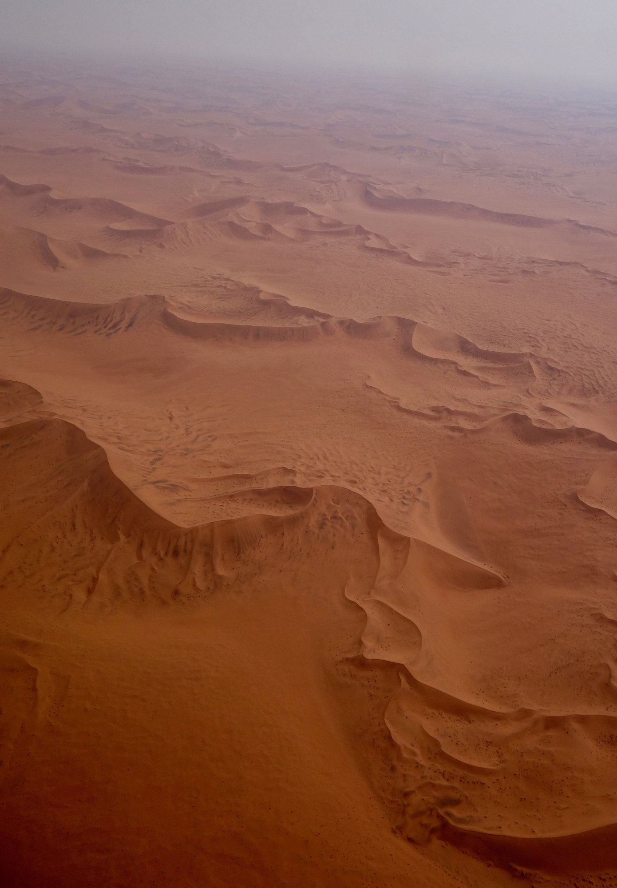
.jpg){kind=link}
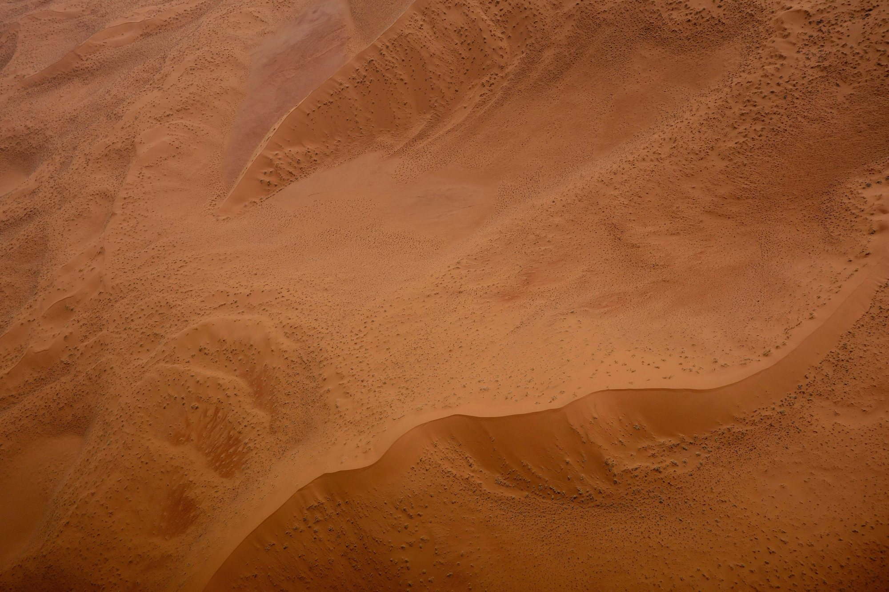
.jpg){kind=link}

.jpg){kind=link}
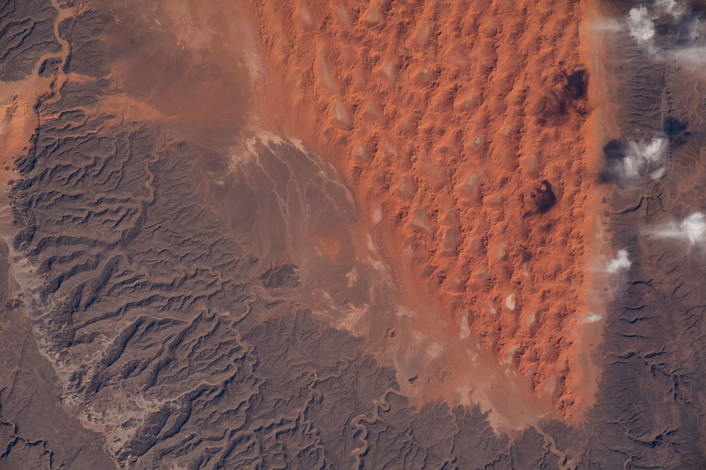
.jpg){kind=link}


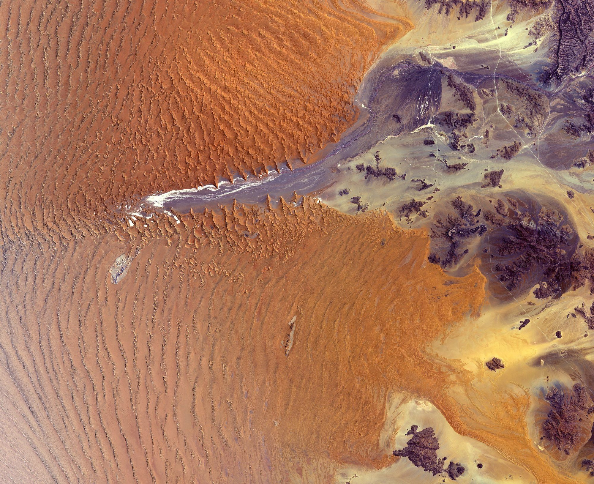


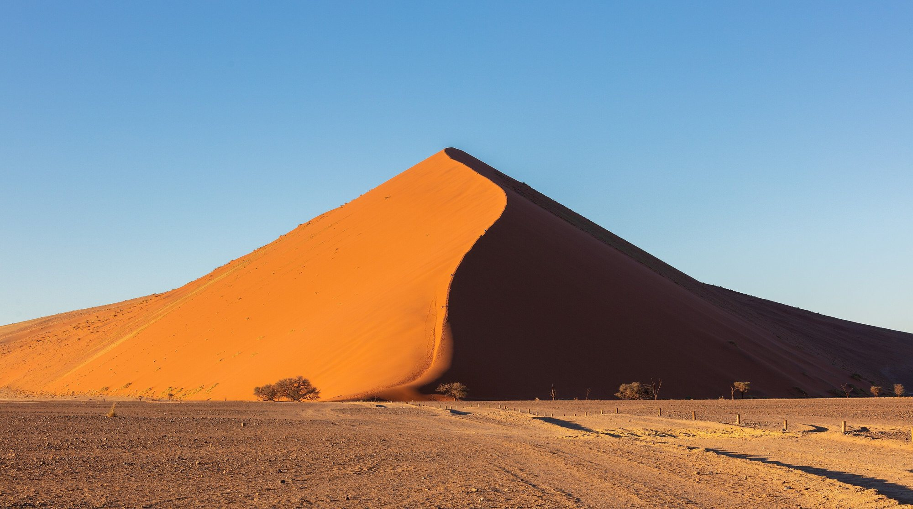

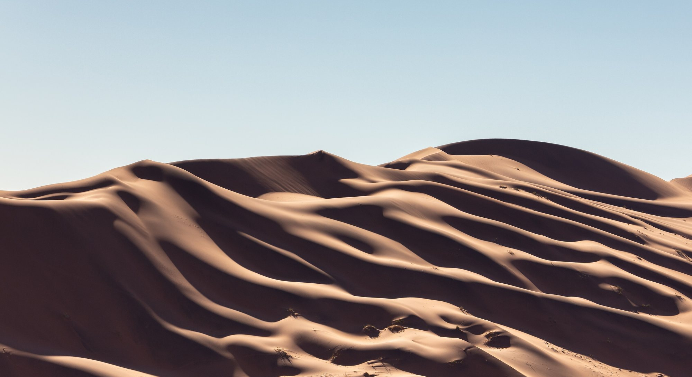


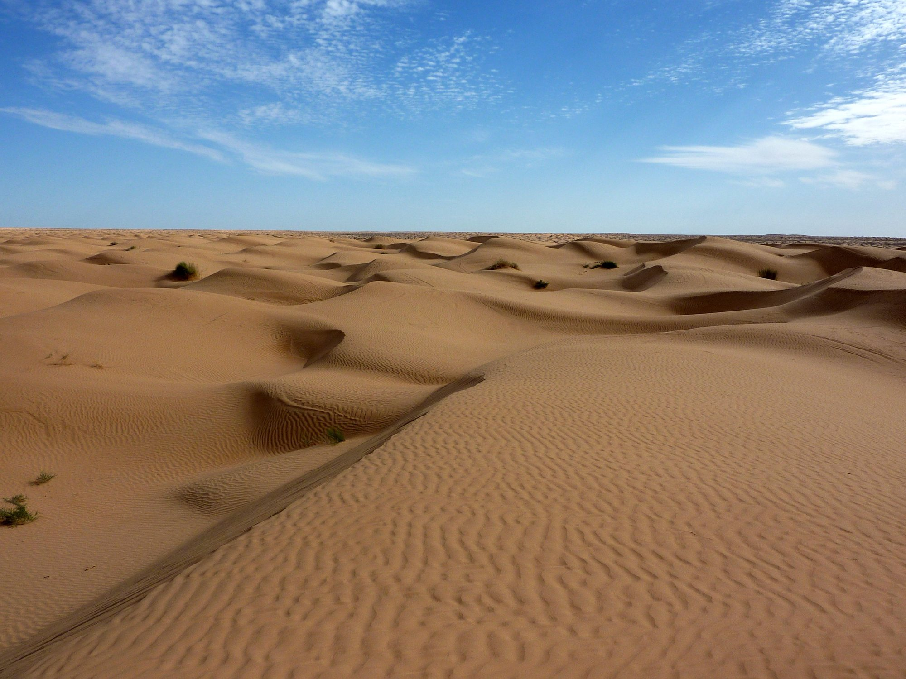


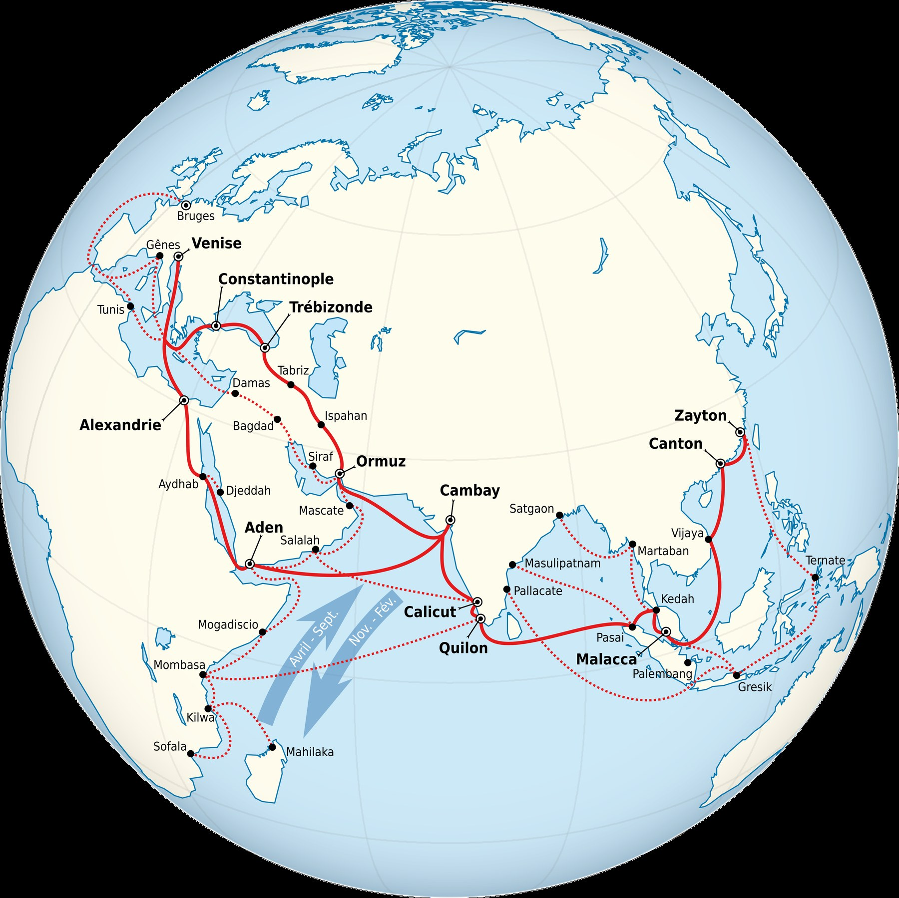

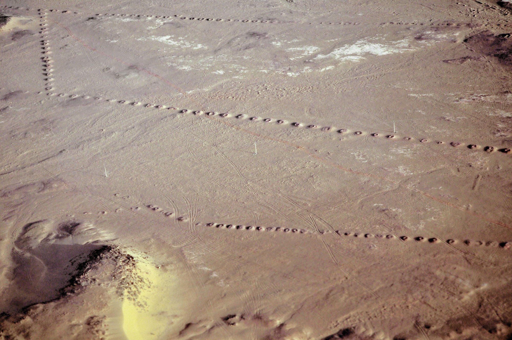

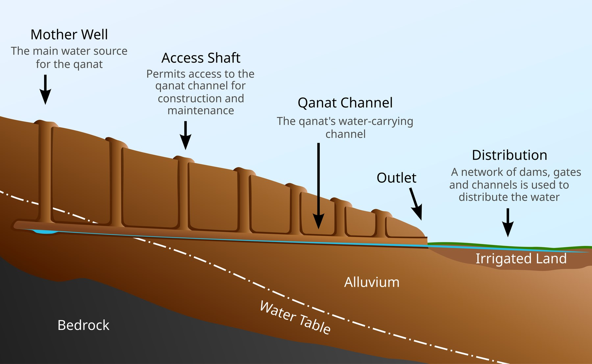

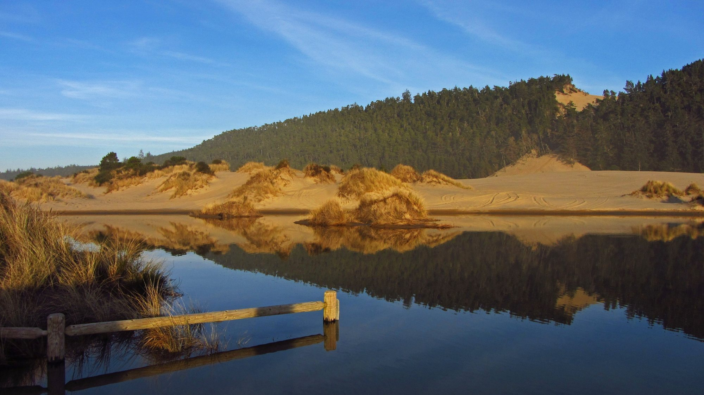

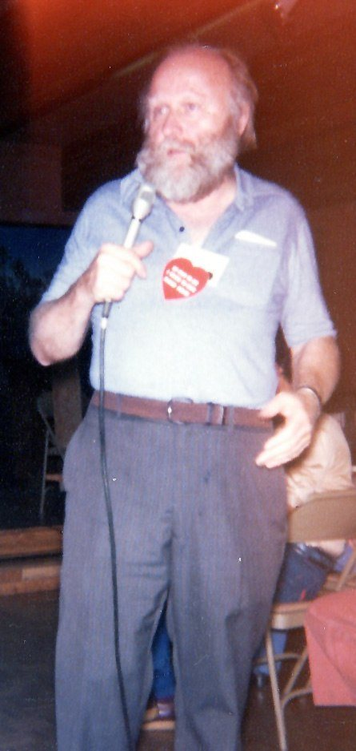

A complete list, with licences and suggested use, is on the sources page. A 1984 Putnam publicity photograph of Herbert is often described as public domain in the United States (no copyright notice). That status does not automatically hold in France, so the photograph is not hosted here.
Downloads
Every document is offered in pdf, docx and odt, from the downloads page: the complete sequence, the teacher's guide, the student booklet, the dys version, the correction sheet, and a blank spiral sheet. The fiche de lecture will join them, in the same three formats, once the model has been received.
Bibliography and image credits
- Frank Herbert, Dune, 1965 (first edition Chilton Books). Use any complete English edition.
- Library record with the epigraph, the dedication and the first words: LibraryThing, Dune.
- A quotation collection used for cross-checking (always verify in a paper edition): Wikiquote, Dune.
- For the teacher only, a biography in which Lesson 1 details may be checked: Brian Herbert, Dreamer of Dune: The Biography of Frank Herbert, 2003.
Frank Herbert, Dune, 1965. The novel remains protected (the author died in 1986): only short quotations, with precise book and chapter references, will be used. Full credits for every image are on the sources page.
Official texts cited on this page: programme de langues vivantes, BO n° 22 du 29 mai 2025; présentation sur Éduscol.